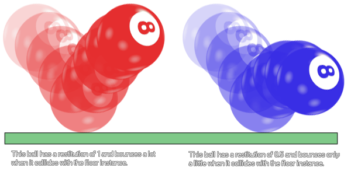

physics_fixture_set_restitution(fixture, restitution)
| Argument | Description |
|---|---|
| fixture | The index of the fixture |
| restitution | The restitution of the fixture (usually between 0 and 1) |
Returns : N/A
In physics, restitution is defined as "the return of an object or system to its original state after elastic deformation", but as the fixtures in the GameMaker:Studio are really rigid bodies and cannot be
deformed, restitution is really a way of saying how "bouncy" the fixture is. This setting will affect how much an object "bounces" when it collides with other objects and is co-dependant on other forces that act on
the instance like gravity and friction, and is usually a value between 0 and 1 (higher values can be used but may give un-predictable results). Here is an illustration of how it works:

physics_fixture_set_restitution(fix_Ball, 0.9);
The code above will set the restitution of the fixture indexed in "fix_ball" to 0.9.